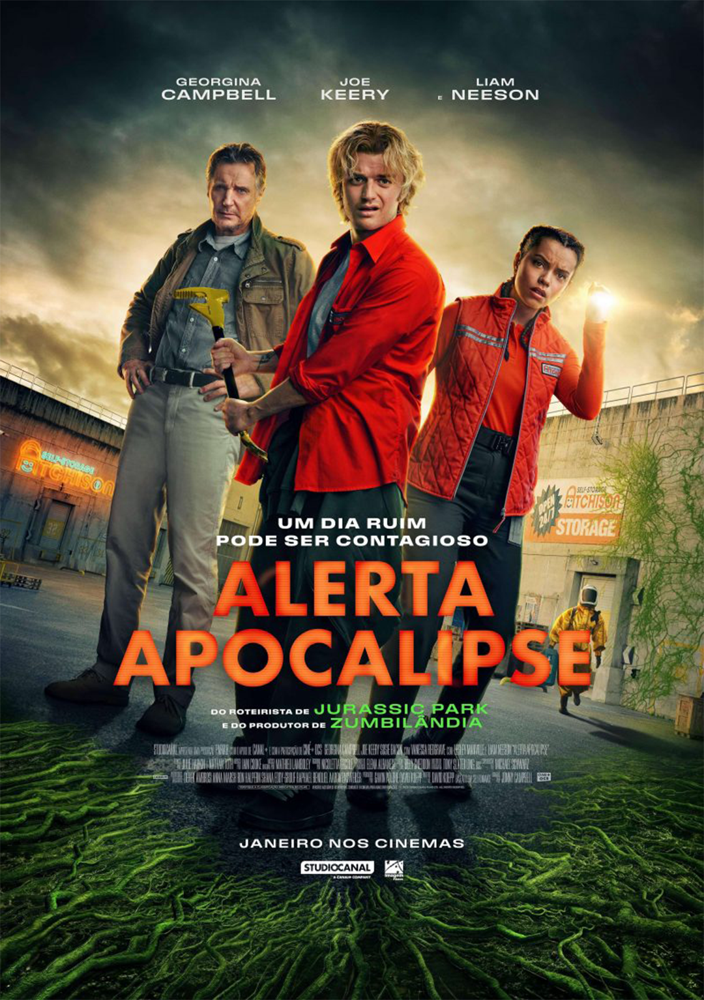
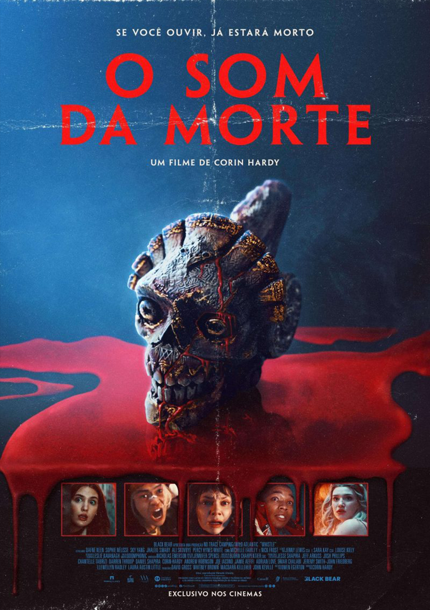
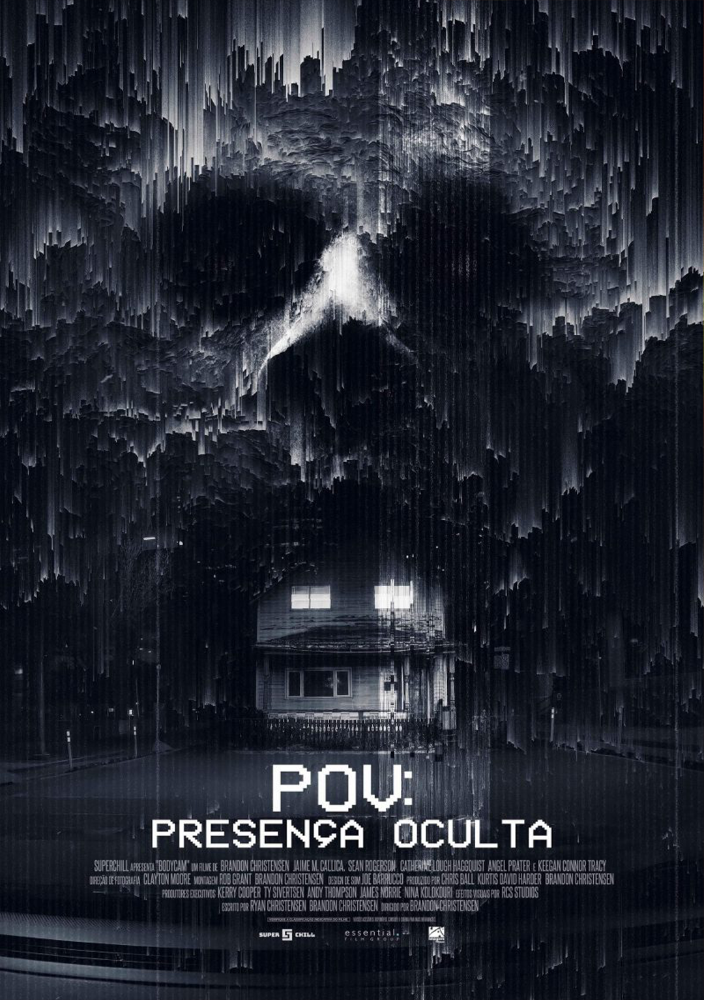
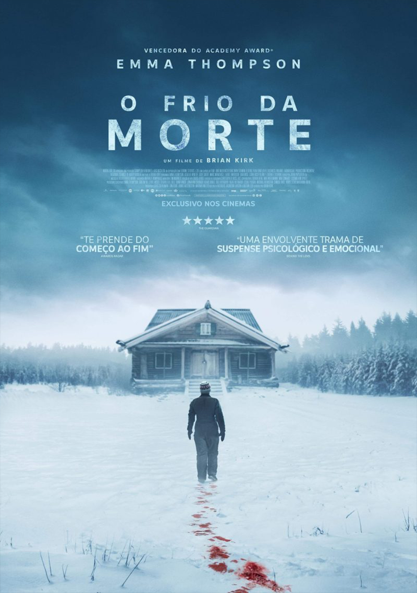
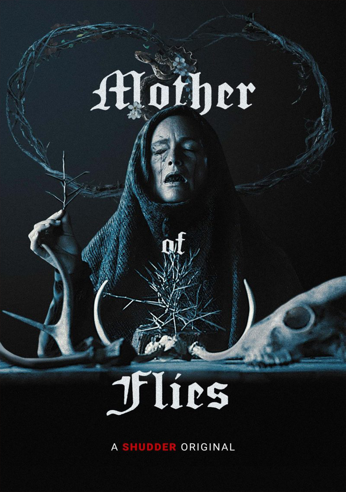
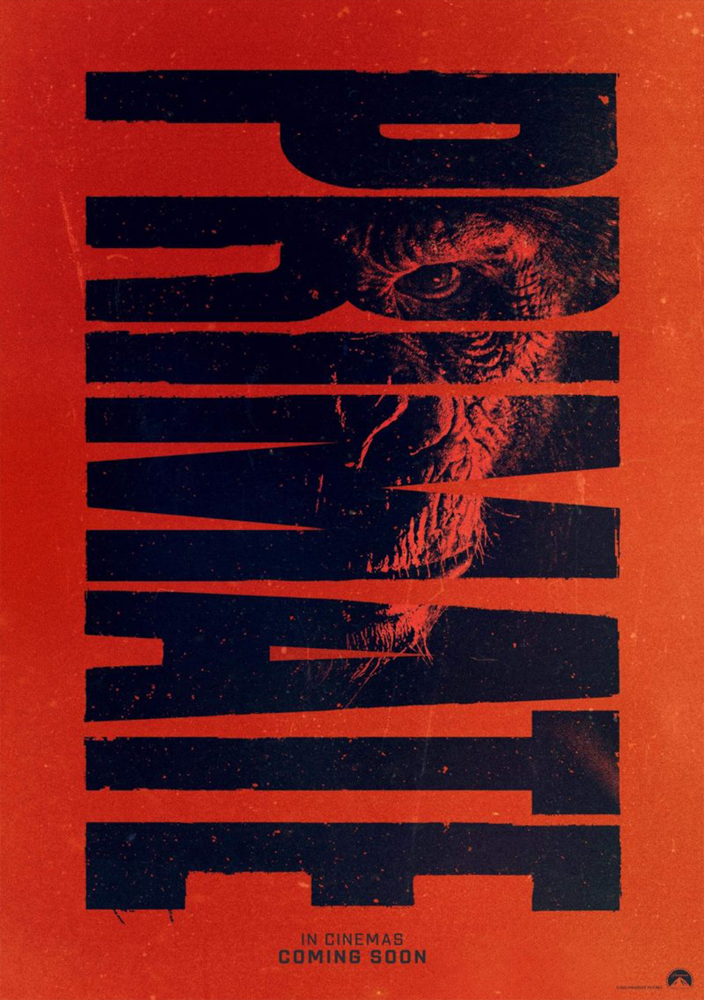
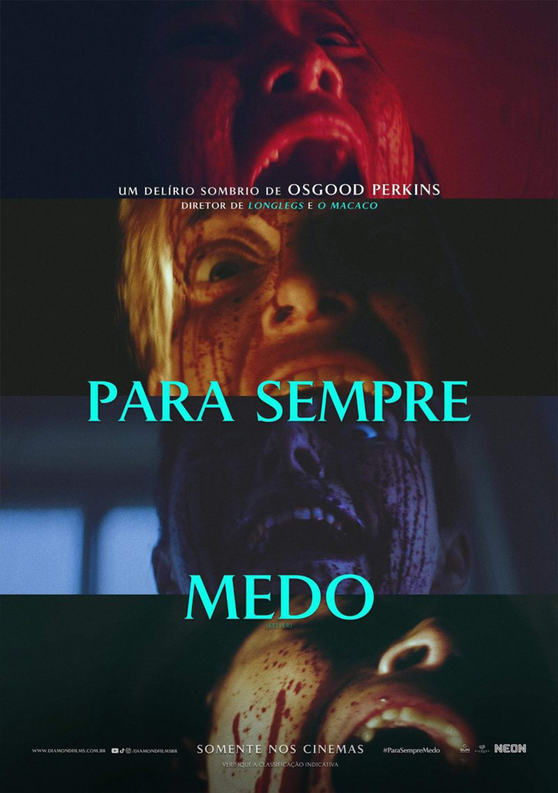
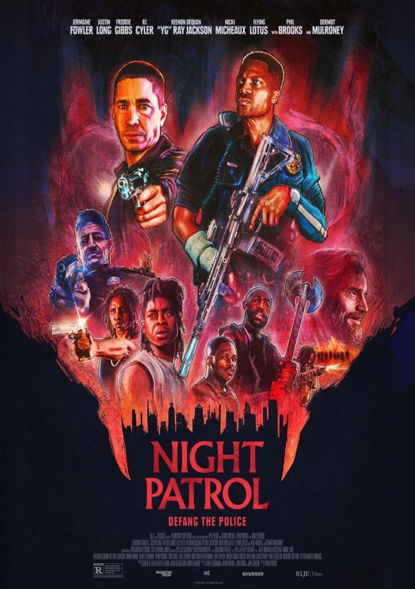

- Drama
- Horror
- Mistério

Sinopse
Terror em Silent Hill:
Regresso para o Inferno (2026)
Acompanha a
terrível estadia de James (Jeremy Irvine) numa cidade aterrorizante.
Quando ele recebe uma carta misteriosa de seu amor perdido após ter
se separado dela, James é intimado a voltar para uma cidade
esquisita chamada Silent Hill.
Na carta, está a promessa de que irá encontrar sua preciosa alma gêmea novamente.
No entanto, com o passar dos dias nessa comunidade antes reconhecível, eventos bizarros
causados por uma força malévola desconhecida começam a acontecer.
Conforme ele se aprofunda na cidade, James vai dando de cara com figuras sombrias,
familiares e monstruosas. Sem entender o que está acontecendo e que força é essa que tem tanta
influência na cidade, o rapaz começa a questionar a sua sanidade mental enquanto desvenda
uma verdade apavorante com a esperança de permanecer forte o suficiente para resgatar a sua amada.
- Horror
- Comédia
- Ficção Científica

Sinopse
Alerta Apocalipse:
Um dia ruim pode ser contagioso (2026)
Baseado no livro homônimo de David Koepp, o filme Alerta Apocalipse
segue a história de Robert Quinn (Liam Neeson),
um agente bioterrorista do Pentágono que é o único capaz de deter um
estranho organismo altamente mutante. Este organismo
escapa de seu armazenamento em uma instalação governamental,
causando uma epidemia global e potencial destruição em nível
de extinção. Quinn se reúne com um grupo improvável de civis que
lutam por sua própria sobrevivência; juntos, eles são a única
esperança de salvar a humanidade. Além da ameaça biológica, eles
enfrentam desafios internos, incluindo desconfianças e conflitos
pessoais. A trama é repleta de suspense e ação, explorando temas de
coragem, sacrifício e a luta pela sobrevivência.
A questão que fica é se sorte, destemor e um senso de humor mordaz
serão suficientes para completar essa importante missão e evitar uma catástrofe mundial.
- Horror
- Terror Slasher
Sinopse
Os Estranhos: Capítulo Final (2026)
Os Estranhos: Capítulo Final conclui a trilogia de terror focada em
Maya (Madelaine Petsch).
Após sobreviver aos eventos anteriores, ela enfrenta um confronto
final e desesperado contra os assassinos mascarados,
aprofundando o envolvimento psicológico com eles enquanto tenta
escapar de uma cidade isolada
Exclusivo nos cinemas
- Horror Corporal
- Terror Adolescente
- Splatter Horror

Sinopse
O Som da Morte (2025) acompanha um grupo de estudantes do ensino médio que acidentalmente
encontra um apito fúnebre asteca amaldiçoado.
Ao assoprarem o artefato, eles liberam um som aterrorizante e passam a ser
implacavelmente caçados pelas manifestações de suas próprias mortes.
- Horror
- Mistério
- Suspense
- Terror Slasher
Sinopse
Em Pânico 7 (2026), um novo Ghostface ressurge para aterrorizar Sidney Prescott (Neve Campbell).
O assassino passa a atacar na pacata cidade onde ela reconstruiu sua vida, colocando a segurança de sua filha, Tatum (Isabel May),
no centro de uma série de ataques mortais.O longa, que comemora os 30 anos da franquia, foca na dinâmica familiar de Sidney e
no retorno do diretor e roteirista Kevin Williamson
- Horror
- Imagens encontradas de terror

Sinopse
Em POV: Presença Oculta (2025), dois policiais atendem a uma ocorrência de rotina que
termina em um tiroteio acidental. Temendo as consequências públicas, eles encobrem o caso, mas logo
percebem que as câmeras corporais não são as únicas coisas observando e os perseguindo.
- Ficção Científica Distópica
- Terror Psicológico
- Terror Zumbi
- Suspense

Sinopse
Em Extermínio: O Templo dos Ossos (2026), a sobrevivência ganha contornos mais aterrorizantes do que o próprio apocalipse zumbi. Com direção de Nia DaCosta, a trama acompanha o Dr. Kelson tentando conter os efeitos do vírus, enquanto o jovem Spike se junta a uma seita sádica liderada por Jimmy Crystal
- Ação
- Suspense

Sinopse
O Frio da Morte (2025) acompanha Barb (Emma Thompson), uma viúva que viaja para espalhar as cinzas do marido no Lago Hilda. Após se perder em uma nevasca brutal, ela busca abrigo em uma cabana e descobre uma adolescente sendo mantida em cativeiro por um casal armado. Sem comunicação, ela vira a única esperança da jovem.
- Horror
- Terror Popular

Sinopse
Mother of Flies (2025/2026) é um filme de terror do coletivo de cineastas da Família Addams. A história acompanha uma jovem que, ao receber um diagnóstico terminal, procura a magia negra de uma bruxa reclusa na floresta. No entanto, ela descobre da pior forma que toda cura mágica tem um preço sinistro.<
Streamings:

- B-Horror
- Splatter Horror
- Terror Adolescente
- Horror

Sinopse
O Primata (Primate) é um filme de terror e suspense lançado em janeiro de 2026, dirigido por Johannes Roberts. A trama segue a universitária Lucy, que retorna ao Havaí para férias na casa da família. O ambiente paradisíaco se transforma em um pesadelo quando o chimpanzé de estimação, Ben, é mordido por um animal selvagem, contrai raiva e se torna uma ameaça brutal
- Horror Corporal
- Suspense
- Mistério
- Terror Psicológico

Sinopse
Para Sempre Medo (2025) é um terror psicológico tenso dirigido por Osgood Perkins. A história segue o casal Lis (Tatiana Maslany) e Malcolm (Rossif Sutherland) em um fim de semana romântico em uma cabana isolada. Quando Malcolm parte inesperadamente, eventos sombrios revelam segredos aterrorizantes, forçando Lis a confrontar uma presença sinistra
- B-Horror
- Terror Vampírico
- Suspense
- Mistério

Sinopse
Night Patrol (2025) acompanha um policial de Los Angeles que é forçado a confrontar antigas rivalidades com gangues locais. Ele descobre que uma força-tarefa de elite da própria corporação — da qual seu ex-parceiro faz parte — esconde um segredo terrível que coloca em risco os moradores do bairro onde ele cresceu.O filme mistura terror, mistério e suspense e aborda o racismo sistêmico dentro da polícia ao revelar que a unidade especial está ligada a uma ameaça vampírica na região
Streamings: